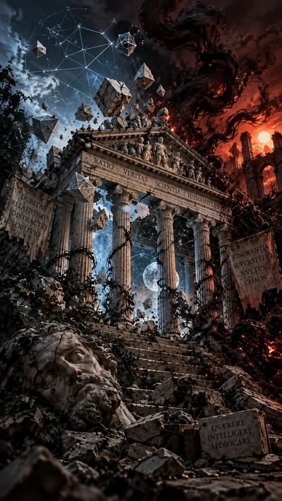

Opinion / The lead essay
The Death of Rationalism
Rationalism was meant to be a method, not an identity. It was to be the discipline of honest seeing, not another tribe of the like-minded. You question, you examine, you see clearly.
Read the essay